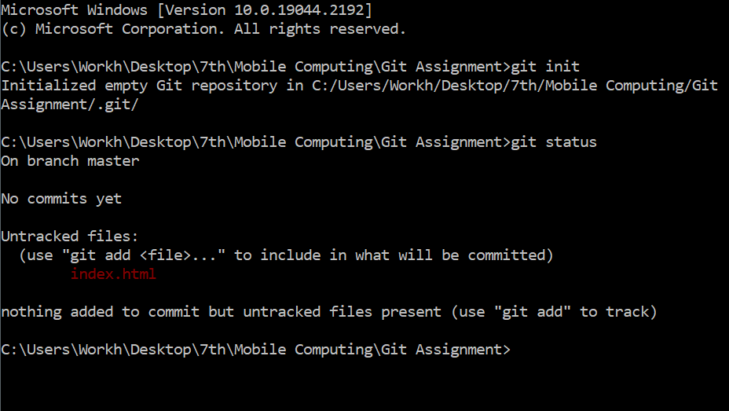
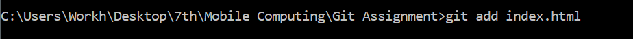
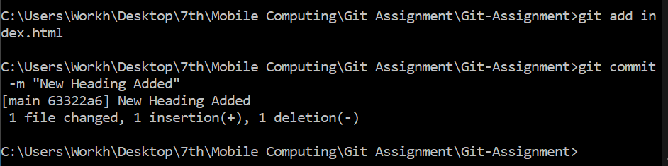
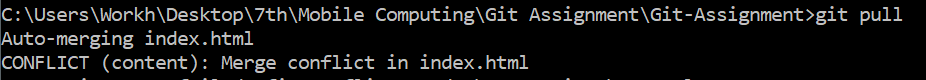
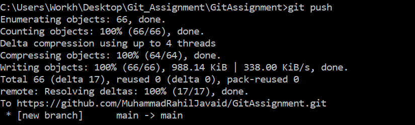
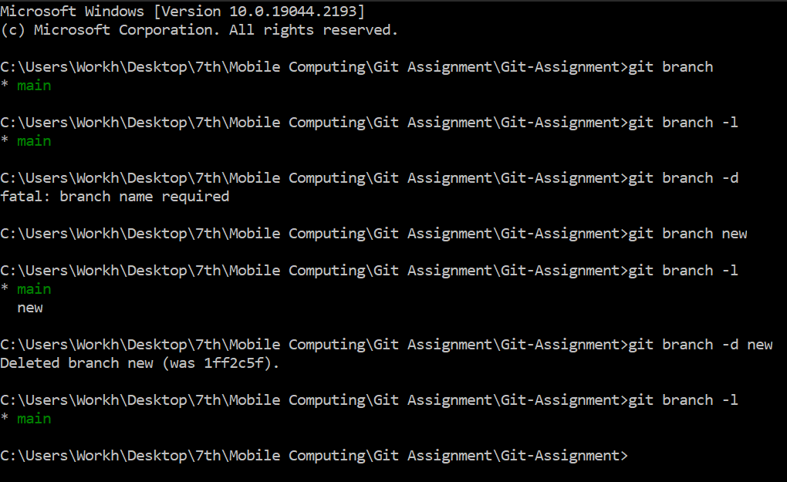
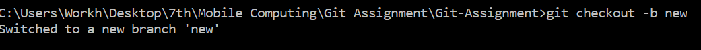
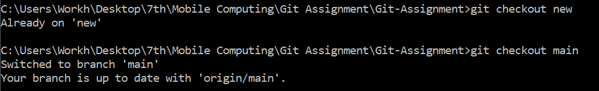
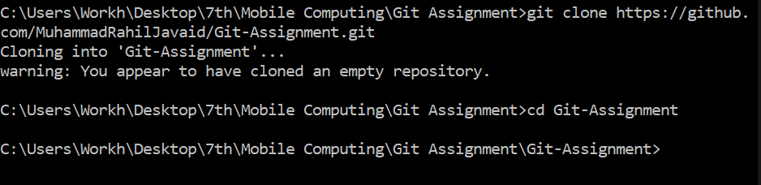

=> Git is a free and open source distributed version control system designed to handle everything from small to very large projects with speed and efficiency
=> Download and install the latest version of Git from https://git-scm.com/downloads
~ when you run this command in your project directory, or when you cloned an existing project, you created a repository The repository is a subdirectory named .git containing various files The dot indicates a “hidden” directory You do not work directly with the contents of that directory; various git commands do that for you

~ This command shows the untracked changes/files that can be added and committed in the repository.
~ This command can either be used for a single file like git add [filename.extension] or it can be used like git add . , to add all untracked changes/files.
~ This command is used to commit the added changes, the -m stands for the commit message which should be added in double qoutes. You can also commit with a description along with a message by git commit -m "some message" -m "some description" , the second -m will be for the description.
~ If the remote repository has been changed when you last worked on it you can pull the changes on to your local repository so that it reflects the remote version. Always run the pull command whenever you continue working so that you know what changes were made.
~ This command is just to push the changes you have made. This pushes all the committed changes onto the remote repository in the branch you are on.
~This command is also used to create a branch, but it doesn't immediatly switches to it after creation This command can also be used to list branches by using git branch -l or delete them by using git branch -d .
~ This command is used to create a branch with the given branch name and then switch to that created branch.
~ This command is used to switch between branches that are created through either of the above two commands.
~ This command is used to clone a remote repository in your local machine. You need to copy the url given by the git hosting fascility and past it after the clone keyword in place of [url]
